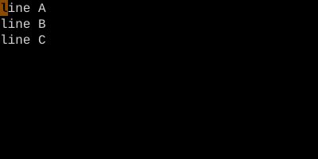
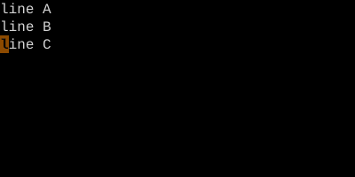

The Jump List
Ctrl-O / Ctrl-I — walk back and forward through your big jumps.
Vim records every "big jump" you make in a per-window jump list. Ctrl-O moves backward through it; Ctrl-I (Tab) moves forward.
Every time you make a big jump — a search, a G, a %, a mark jump — Vim pushes the position you came from onto a list. Ctrl-O walks back through it; Ctrl-I walks forward.
| Key | Note |
|---|---|
| Ctrl-O |
| Key | Note |
|---|---|
| Ctrl-I |
| Key | Note |
|---|---|
| : | |
| j | |
| u | |
| m | |
| p | |
| s | |
| Enter |
Worked example — Ctrl-O and Ctrl-I
Walk back through your jump history.



Vim records 'big' jumps in a per-window list. Ctrl-O goes back, Ctrl-I goes forward.
See also: Setting and Jumping to Marks, The Change List, Pattern Search